11-05 하위 제어·개선 보고서의 후속 · 모델·로컬라이제이션 팀과 운용 담당을 위한 기술 보고서
요약 — 2026-11-06 회의에서 BSW 의 역할을 ① 모델 가감속 → 페달 % 변환, ② 모델 입력 끊김 → 정지, ③ 경기 신호를 ROS 로 전달, ④ 휠 엔코더 전달, ⑤ 물리 한계 측정으로 좁혔다. 깃발 반응과 조향 보정은 모델 담당이다. 이에 따라 같은 날 먼저 구현된 경기 상태 기계·서행 제어·0x203 송신을 걷어내고(WP-1), 11-04 트랙 분석에서 나온 엔진룸 결함 2가지를 고쳤으며(WP0), 경기 신호 전달 /race/state 를 새로 구현했다(WP1). 부록 A 의 데이터시트는 모두 CAN 원본·SIL 결과를 PlotJuggler 로 열어 캡처한 화면이다. 이 보고서의 어떤 값도 실차 검증을 거치지 않았다 — 표 숫자는 그래프 판독 잠정값이고, 첫 실차 확인은 11-14 이다.
uturn, until_heading, --turn)를 지우고 현장 문서를 지시서 4절 절차로 바꿨다. 다만 그 절차의 원 돌기·표 갱신 도구(WP3)는 아직 없다(7장)| BSW 가 하는 것 | BSW 가 하지 않는 것 (모델·플래닝·로컬라이제이션) |
|---|---|
| ① 가감속 명령 → 페달 % 변환 | 속도 제어, 램프, 필터, 예측 보정 |
| ② 입력 끊김 → 정지 (기존 HOLDING → STOPPED 그대로) | 짧은 끊김 복구, Go 잠금, 서행 강제, RES 반응, 정차 유지 |
③ 깃발·RES·0x202·앱 상태 → /race/state 전달 | 깃발 해석(phase), 0x203 송신 |
④ 휠 엔코더 → /control/status/wheel_info | 위치·속도 추정 |
| ⑤ 차량 물리 한계 측정·전달 | 조향비·불감대·고속 보정의 코드 반영(표 숫자만 BSW 가 측정해 넣음) |
| WP | 내용 | 확인한 것 | 못 한 것 |
|---|---|---|---|
| WP-1 | 폐기 설계 제거, d702f63 기준 복원. 삭제 전 상태는 태그 race-flag-full-3309cd1 | 11-05 8개 시나리오가 복원 기준과 같음, can_guard 30,925 byte | rehearse_lift_guard 31/31(개발 PC) |
| WP0 | 조향 7점 표·영점, 가속 히스테리시스, 데이터시트 v0.5 | 단위 시험 23 통과, 실제 어댑터 고정 입력 0 회/분 | 폐루프·실차 효과 |
| WP1 | /race/state, can_guard 이벤트 로그, 상태판 칸, 자동 판정 | 시나리오 10 개 ×3 회 통과, 지연 중앙 0.94 ms, 대회 신호 유무로 0x210 동일 | 대회 PC 지연, 실물 프레임(11-23) |
| WP2 이후 | 2차원 표, 측정 도구, 실차 — 시작 안 함(지시서: WP0·1 결과 확인 후 별도 지시) | — | — |
명령 모델 ─/control/target→ a1_control_adapter(표 변환·히스테리시스·arm) ─공유메모리→ can_guard ─0x210 20 ms→ 차량
상태 차량 ─0x200/0x201→ can_raw_bridge ─/interface/can/read/raw→ a1_status_decoder ─/control/status/*→ 모델·로컬라이제이션
경기 대회 서버·차량 ─0x124~0x128·0x202·0x156→ can_raw_bridge ─raw→ race_state_publisher ─/race/state→ 모델
└→ can_guard: 이벤트 로그만(상태·명령에 안 씀)
차량으로 보내는 주체는 여전히 can_guard 하나다. race_state_publisher 는 아무것도 송신하지 않고, 해석 코드(safety/can_guard/race_signal.py)를 can_guard 와 공유한다.
첫 지시서대로 오후에 구현된 경기 상태 기계·서행 제어·0x203·복구·StatusChannel 을 회의 결정에 따라 걷어냈다. 삭제 전 전체는 로컬 태그에 있어 모델 팀이 다시 요청하면 꺼낼 수 있다.
docs/engine_room_open_items.md E-0). 또 지시서는 reports/race_flag/ 를 archive 로 옮기라 했으나 사용자 지시에 따라 삭제했다(태그에는 남음).| 구분 | 대상 |
|---|---|
| 복원 | can_guard 핵심(can_guard·state_machine·command_policy·protocol·tx_encode), cmd_adapter, track.yaml, 브리지 launch·setup, 가짜 차량, tools/bsw, tools/track_day, 현장 매뉴얼·메모장 |
| 삭제 | race_state·race_runtime·race_policy·speed_ctrl·speed_limit·recovery, race_flag.yaml, race_rules, race_status, tools/race_flag, 시나리오 17 개와 그 시험, 데이터시트 v0.3, 실차 시험 계획 |
| 재사용 | race_signal(해석만), RaceState.msg(필드 교체), race_state_publisher(raw 구독으로 교체), fake_race_server, 시나리오 10 개 |
| 옮김 | 요구사항 → docs/engine_room_requirements.md(담당 = 모델), 미결 → docs/engine_room_open_items.md, 첫 지시서 → docs/archive/ |
11-04 bsw5 분석에서 핸들 ±150° 가 타이어 ±10~11° 밖에 안 돌고, 핸들 0° 에서 타이어가 왼쪽으로 약 +1.2° 돈다는 것이 드러났다. 직선에서 늘 왼쪽 +0.33 m, 코너 바깥으로 밀린 원인이고 bsw4 연석 직전 비상정지로 이어졌다. 조향 변환 코드(SteerMap, SlewLimiter, steer_sign)는 건드리지 않았고 track.yaml 숫자만 지시서 값으로 바꿨다. 되돌리기용 옛 표는 config/steer_map_v0_20261104.yaml.
| 타이어 ° | −11.5 | −8.5 | −5.0 | 0.0 | 5.5 | 9.0 | 11.5 |
|---|---|---|---|---|---|---|---|
| 핸들 ° | −150 | −100 | −50 | −9 | 50 | 100 | 150 |
표를 11-04 측정 점과 비교했다. 저장소의 측정 점(measurements/2026-11-04_drive_log/tables/steer_ratio_points.csv, 2,449 점)으로 오차를 계산하면 전체 RMS 는 옛 표 2.41° → 새 표 0.75° 로 줄어든다. 다만 대부분 구간에서 측정값이 새 표보다 약 0.6° 왼쪽이다. 같은 측정의 회귀로는 직진 핸들각이 −13.7° 이고, 지시서가 과보정을 막으려고 고른 −9° 는 그 작은 쪽이다. 즉 직진에서 타이어 약 +0.5° 가 남을 수 있다. 11-14 직선 횡편차로 판단할 값이며, 지금은 지시서 값을 유지했다.
| 핸들 구간 ° | 점 수 | 측정 평균 | 새 표 오차 | 옛 표 오차 |
|---|---|---|---|---|
| −150 ~ −120 | 22 | −10.58 | −0.65 | −8.81 |
| −120 ~ −80 | 86 | −6.62 | −1.06 | −5.16 |
| −80 ~ −40 | 213 | −4.21 | −1.21 | −3.41 |
| −40 ~ −5 | 1,872 | −0.15 | −0.60 | −1.86 |
| −5 ~ 20 | 174 | 1.62 | −0.60 | −1.36 |
| 20 ~ 60 | 44 | 5.60 | −0.57 | +0.41 |
| 60 ~ 110 | 38 | 7.80 | +0.39 | +3.98 |
| 전체 RMS | 2,449 | 0.75 | 2.41 |
data/steer_map_error.csv.예전 표는 목표 0.1 m/s² 를 넘는 순간 가속 75 % 로 뛰고 아래면 0 이어서, 순항 목표 0.03~0.18 m/s² 가 경계를 넘나들 때마다 페달이 켜졌다 꺼졌다. LongMap.to_pedals() 에 상태를 두었다: |a| > 0.10 켜짐, |a| < 0.03 꺼짐, 사이는 이전 상태 유지(브레이크 쪽도 같음). 분석 보고서의 "주행 중 75 % 바닥값" 제안은 지시서대로 채택하지 않았다. 지시서에 없어 더한 것 하나: 종방향 arm 순간 상태를 지운다. disarm 중 입력이 0.05 였다가 arm 될 때 가속 75 % 로 시작하지 않게 하려는 것으로, 차가 덜 움직이는 쪽이다(E-4).
| 조건 | 전환 / 분 | 출처·방식 |
|---|---|---|
| 11-04 bsw5 전 구간(420 s) | 202 ★ | CAN 원본 0x210 acc 0 ↔ >0 직접 계수. 분석 보고서 161 은 다른 집계(bag 기반) |
| 11-04 bsw5 직선 순항(t 105~135 s) | 328 ★ | 같은 원본. Fig. A4 |
| SIL 고정 입력 0.03~0.18 난수, 예전 표 | 1,498 | 실제 cmd_adapter, 60 s, 개발 PC |
| SIL 고정 입력 0.03~0.18 난수, 히스테리시스 | 0 | 같은 조건. 합격 ≤ 5 (지시서 WP0) |
reports(log)/20261104_track/2_가속/PJ_2…PJ110s.png)을 보면 목표 가속도가 약 1.8 s 주기로 0.02~0.15 를 오간다. 경계 잡음은 사라져도, 골이 0.03 아래로 내려가면 주기마다 2 회, 즉 약 65 회/분 ★(그래프 판독 추정)이 남을 수 있다. 단순 폐루프 시뮬레이션도 만들어 봤지만 11-04 on/off 를 재현하지 못해 근거로 쓰지 않고 지웠다. 줄어드는 정도는 11-14 에 잰다. 남으면 지시서대로 모델 팀에 속도 PI 재조정을 요청한다.신호를 해석하지 않고 비트 원본과 래치만 올린다. 대회 측 답변 전이라 신호 유지 방식이 미정이어서 seen_* 래치를 함께 준다 — 짧게 한 번만 켜져도 모델이 놓치지 않게 하기 위해서다. 전체 필드는 데이터시트 v0.5 05 시트에 있다.
| 필드 | 원본 | 규칙 |
|---|---|---|
sig_go/slow_on/slow_off/finish/stop | 0x124 | 2 프레임 연속 확인(약 20 ms 지연). 1 프레임 깜빡임은 무시 + 기록 |
seen_* | 0x124 | 한 번 확인되면 BSW 재시작 전까지 유지. 재시작 후 옛 Go 가 계속 켜져 있어도 비트대로 올린다(구분은 모델 M-09) |
last_signal(_stamp) | 0x124 | 마지막으로 0→1 확인된 깃발, 그 첫 프레임 시각 |
res_active | 0x127 | 1 프레임 즉시, 켜짐·꺼짐 모두. 작동 중 차량은 0x210 무시, 풀리면 즉시 따름 |
res_alive_ok, res_age_s | 0x127 | 0.5 s(잠정) 안에 프레임·alive 변화가 있으면 true. 못 받았으면 false / −1 |
res_end, res_error | 0x128 | 전달만 |
remote_app_active | 0x156 | En 중 하나라도 1 |
vehicle_speed_limit_kph | 0x202 | 전달만, −1 = 없음. 30.0 은 원격 제한(자율 상한 아님) |
pit_lat/lon_deg | 0x125 | NaN = 없음, 끊겨도 마지막 값 유지 |
guard_state | — | 예약. 항상 빈 문자열(can_guard 상태가 ROS 로 나오지 않음, E-1) |
| 시나리오 | 확인 내용 | 3회 |
|---|---|---|
| S02 계속 켜짐 | 2 s 에 seen_go·sig_go, last_signal=GO | 통과 |
| S04 2 프레임 | seen_go 남고 sig_go 다시 false | 통과 |
| S03 1 프레임 / S03b 깜빡임 | 깃발 무시, seen_go=false, NONE | 통과 |
| S09 RES 3 s | 7 s·10 s 에 정확히 켜지고 꺼짐 | 통과 |
| S09b RES 1 프레임 | 1 프레임도 발행됨 | 통과 |
| S10 끊김 / S10b alive 멈춤 | 0.5 s 뒤 res_alive_ok=false, 나이로 둘을 구분 | 통과 |
| S11a 0x124 끊김 | 값 유지, race_signal_age_s 증가 | 통과 |
| X01 피트존 | NaN → 좌표, 끊겨도 유지 | 통과 |
| 조건 | 중앙 ms | p99 ms | 최대 ms | 유실 | 버스 프레임/s | 기타 |
|---|---|---|---|---|---|---|
| 부하 없음 | 0.94 | 2.21 | 2.41 | 0/300 | 50 | publisher CPU 4.7 % |
| 실제 버스 부하 + 디코더 | 0.55 | 1.31 | 1.73 | 0/500 | 795 | publisher 14.5 %, decoder 14.0 % |
| vcan0·브리지 별도 프로세스, 부하 없음 | 0.97 | 1.99 | 2.07 | 0/300 | 50 | publisher 4.3 % |
| vcan0·브리지 별도 프로세스, 부하 + 디코더 | 0.51 | 1.14 | 1.68 | 0/500 | 795 | publisher 14.0 %, decoder 13.7 % |
부하. 브리지 필터를 약 145 → 약 545 프레임/s 로 넓혀 11-04 의 밀림(580/s, 52 s)이 걱정됐다. 11-05 브리지 수정 이후라 개발 PC 에서는 재현되지 않았다: 세 프로세스를 코어 하나에 묶어도 0x201 → wheel_info 47.6 Hz 유지, 최대 지연 7.9 ms. 대신 디코더+publisher CPU 합이 8.4 % → 22.4 % 로 늘었다. 대회 PC 에서 빠듯하면 해석에 안 쓰는 0x157 부터 뺀다(E-3).
can_guard 무영향. 실제 can_guard 를 대회 신호 있음/없음으로 돌려 0x210 값 집합과 상태 전이가 같음을 시험으로 확인했다(test_race_log_guard.py). 11-05 8개 시나리오도 복원 기준과 같았다.
데이터시트 docs/A1_BSW_토픽_데이터시트_v0.5.xlsx 에 모두 반영했다(M-12 추가, 05 시트 확정).
| 대상 | 내용 |
|---|---|
| 모델 — 조향 | 최대 타이어 ±11.5°, 타이어 0 = 핸들 −9°. 헤어핀 요레이트 필요값의 70 %. 스틱슬립: 5~8° 계단 추종, 직선 요레이트 ±3~4 °/s, 명령 대비 RMS 3.5° |
| 모델 — 종방향 | 히스테리시스: 0.03 < a < 0.10 은 이전 상태 유지(켜져 있으면 75 %). 브레이크 데드타임 밟기 0.15 s / 떼기 0.4 s. 감속 지속 3.0, 순간 4.1 m/s² |
| 모델 — 경기 규정 | /race/state 구독 필수. M-01~M-12 전부 모델 구현 |
| 모델 — 제안 | 횡오차 적분항(직선 +0.33 m 잔류), 위치 점프 방어, 자동 정지 한계(사람보다 1.5 s 늦음) |
| 로컬라이제이션 | 종방향 점프 0.3 m 이상 21 회/최대 1.1 m → 목표 핸들 8~12° 계단. GNSS bag 에 요레이트·피치, RTX 상태 토픽 요청 |
| # | 내용 | 결정·기한 |
|---|---|---|
| E-6 | 끝(2026-11-06) | |
| E-7 | 원 돌기 계획의 "타이어 ±5/10/15/20°" 는 옛 7.5 기준. 새 표로는 11.5° 에서 포화 → WP3 도구는 핸들각 기준으로 명령해야 함 | WP3 때 반영 |
| — | 영점 −9° vs 측정 회귀 −13.7°(4.1절) | 11-14 직선 50 m 로 결정 |
| E-9 | 10 Hz 입력은 끊김 기준(150 ms)에 여유가 적다. 트랙 리허설 4 회 중 1 회, 10 Hz 입력이 개발 PC 에서 159 ms 벌어져 고장 래치. 주행 중이면 STOPPED 로 이어져 재시작 전까지 못 움직인다. 코드는 설계대로 동작했고 값은 바꾸지 않았다 | 모델 팀 발행 주기 확인(11-13). 20 Hz 이상 권장 |
| E-1 | guard_state 를 비워 둠. 모델 팀이 필요하면 별도 작업 | 모델 팀 의견(11-09) |
| 언제 | 할 일 |
|---|---|
| [x] 개발 PC vcan0 (11-06, 참고값) | rehearse_lift_guard 31/31, E1~E7·P1·P2, 세션 SIL A·B·C, 트랙 리허설 17/17, r_race socketcan 시나리오 10 개. 결과 bsw_test/00_SAF_estop/results/sil_20261106_222201_junhyeok-960QHA/. 시험 기대값 2 곳을 현재 설계에 맞췄다(STOPPED 브레이크 30 % 고정 → 30~60 %, 타이어 4° → 핸들 33.9°) |
| 대회 PC | 같은 시험 + --rt auto(격리 코어) — 판정은 여기서 |
| 별도 지시 후, 11-14 전 필수 | WP2(2차원 표), WP3(원 돌기·표 갱신 도구), 그때 E-7·E-8 반영. speed_ctrl.yaml 은 SIL 가짜 차량 값이라 실차 폐루프 불가 — 직선 계단은 개루프만 |
| 11-14 | ① 점검·RTX ② 원 돌기 ③ 조향 최대각 ④ 직선 계단. 직선 횡편차가 +0.33 m 보다 나빠지면 steer_map_v0 로 복귀, 가속 전환 재측정 |
| 11-23 | 대회 서버 신호 실물 확인 — 0x124~0x127 은 아직 실물 프레임을 본 적이 없다 |
아래 그림은 모두 PlotJuggler 3.17 화면 캡처다. 입력은 data/pj/*.csv(11-04 CAN 원본을 DBC 로 푼 값, SIL 결과), 레이아웃은 pj_layouts/*.xml 이라 같은 화면을 직접 열어 볼 수 있다. 가로축은 별도 표시가 없으면 구간 시작 기준 초다. 속도는 0x201 후륜 평균 원값이다(실제보다 약 4 % 낮음, 11-04).
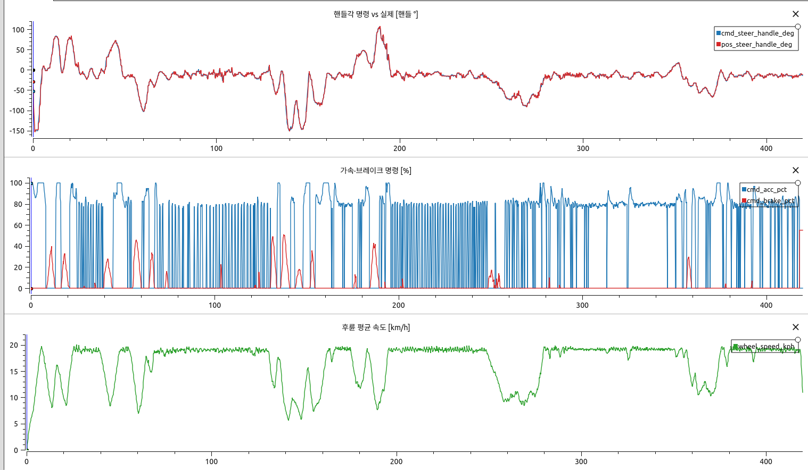
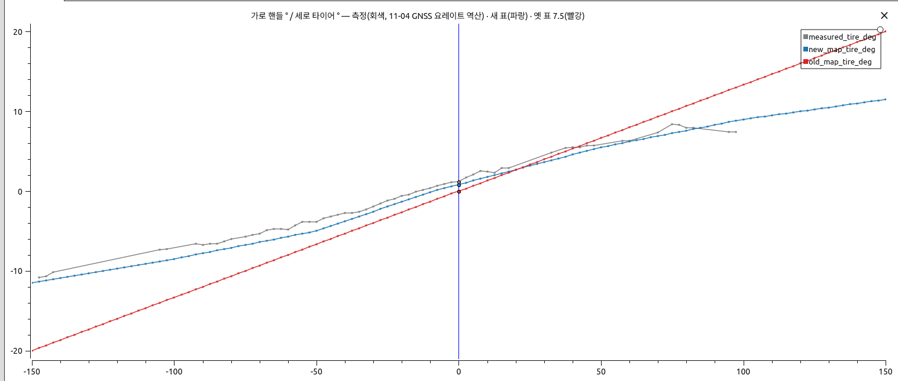
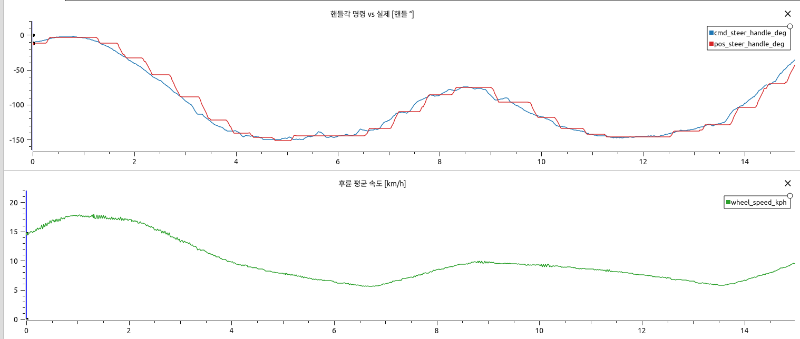
| 항목 | 값 | 출처 |
|---|---|---|
| 최대 타이어각 / 핸들각 | ±11.5° ★ / ±150° | 11-04 bsw5 역산, 그래프 판독, 잠정 |
| 직진 핸들각 | 표 −9°, 측정 회귀 −13.7° | track.yaml, steer_ratio_fit.csv |
| 유효 조향비 | 우 10.9 / 좌 13.6, 평균 10.7 | steer_ratio_fit.csv, 분석 보고서 |
| 핸들 속도 | 어댑터 제한 120 °/s | track.yaml |
| 무반응 | 167~190 ms(중앙 174) | 10-07 리프트 |
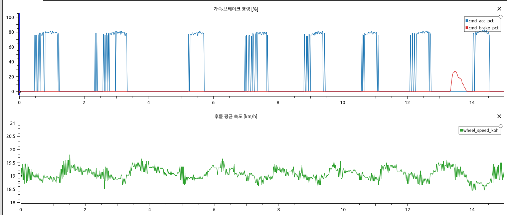
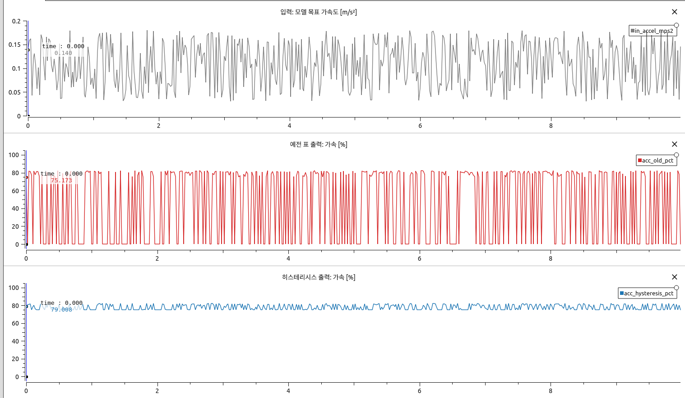
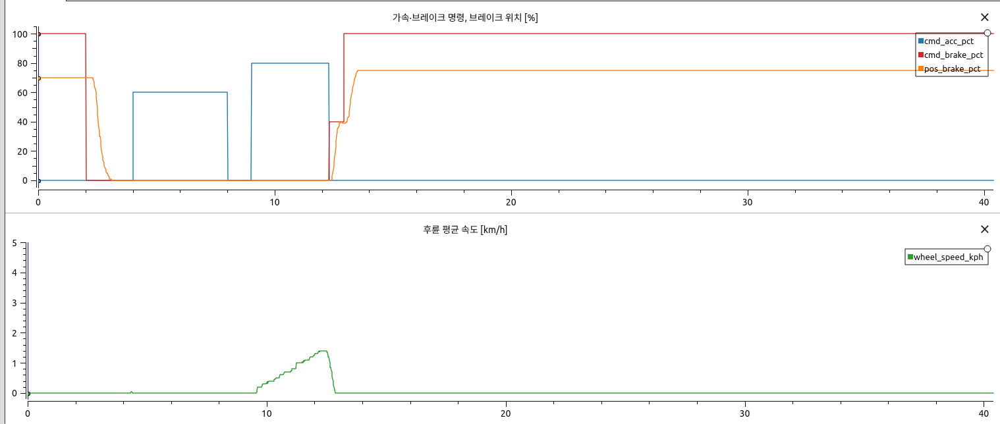
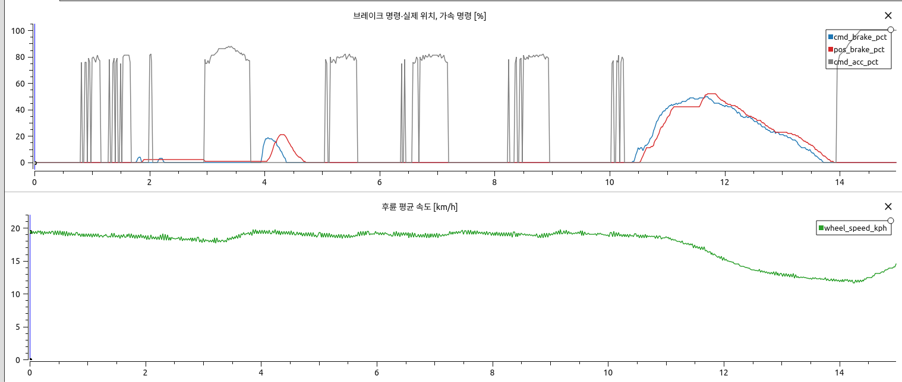
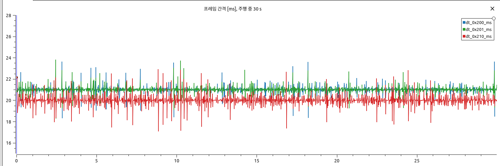
| 항목 | 값 | 출처 |
|---|---|---|
| 가속 표 | 0.1→75 %, 0.13→80 %, 0.57→100 % | track.yaml, 11-04 저속, 잠정 |
| 브레이크 표 | 0.1·1·2·3·4 m/s² → 0·40·70·90·100 % | track.yaml, 잠정(11-14 계단 측정 후 변경) |
| 히스테리시스 | 켜짐 0.10, 꺼짐 0.03 m/s² | track.yaml |
| 가속 최대 | 1.29 / 1.43 m/s² | 10-08 GNSS 지속 |
| 감속 최대 | 지속 1.88 / 3.03, 순간 3.97 / 4.11 m/s² | 10-08 GNSS / 이미지 |
| 브레이크 풀림·출발 지연 | 100→0 % 약 1.4 s, 0.64~0.74 s | 11-04 |
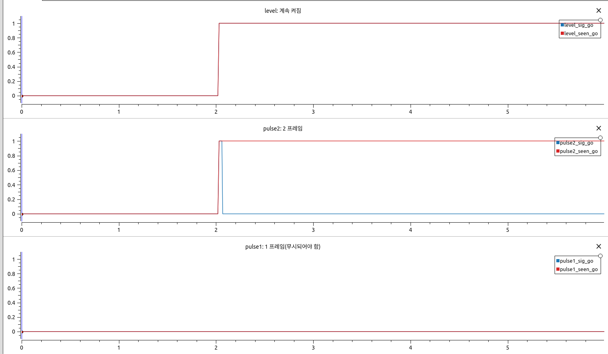
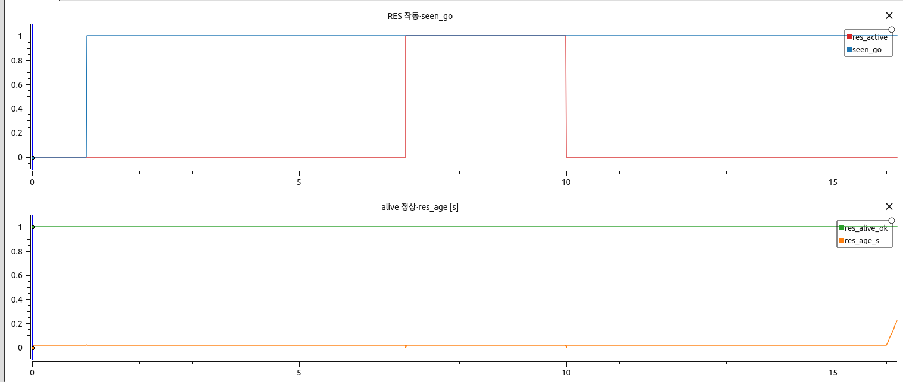
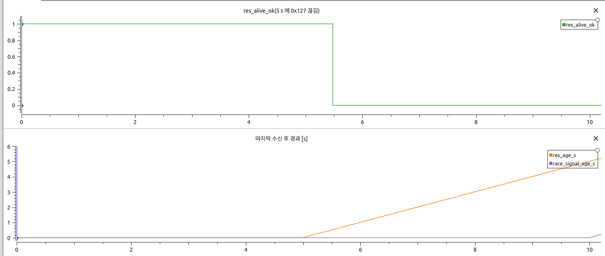
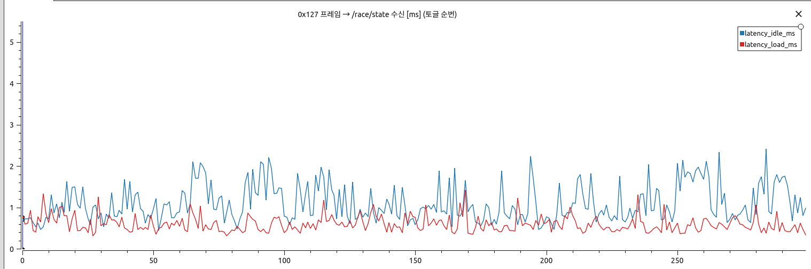
| ID | 이름 | 신호 | BSW 처리 |
|---|---|---|---|
| 0x124 | KIAPI_Race_Signal | byte0: GO 0x80, STOP 0x40, FINISH 0x20, SLOW_ON 0x10, SLOW_OFF 0x08. alive 없음, 주기 20 ms(엑셀), 개요 시트는 TBD | 전달 + 이벤트 로그 |
| 0x125 | KIAPI_PIT_ZONE | 위도 0/32, 경도 32/32, ×1e-7 °. 용도 미정 | 전달 + 이벤트 로그 |
| 0x126 | KIAPI_REPAIR | SIG_REPAIR 0/8. 뜻 미정 | 이벤트 로그만 |
| 0x127 | KIAPI_RES | RES_START bit7, alive_count byte7. 차량이 스스로 제동, 그동안 0x210 무시 | 전달 + 이벤트 로그 |
| 0x128 | KIAPI_RES_FB | RES_END bit7, RES_ERROR 0/3 | 전달 + 이벤트 로그 |
| 0x202 | USER_service_info | speed_limit_info 0/10, ×0.1 km/h | 전달 + 이벤트 로그 |
| 0x203 | USER_service_command | speed_limit. 실제 제한됨 | 보내지 않음 |
| 0x156/157 | KIAPI_Control_01/02 | 대회 원격 앱 | 기존 RemoteEstopDetector + En 전달 |
# 시험
python3 -m pytest -q safety/can_guard/test tools/race_day/test_lift_tx.py sil/vcan/test_fake_race_server.py \
tools/bsw/test_bsw_monitor_race.py ros2_ws/src/a1_control_adapter/test/test_conversion.py
source /opt/ros/humble/setup.bash && source ros2_ws/install/setup.bash
python3 safety/can_guard/sil_tests/r_race.py --out <폴더> --latency 300 # 시나리오 + 지연
python3 safety/can_guard/sil_tests/r_race.py --no-scenarios --latency 500 --load --out <폴더>
python3 bsw_test/common/scripts/adapter_cruise_check.py --out <폴더> # 히스테리시스
# 데이터시트
python3 make_data.py ../.. . # CAN 원본 → data/pj/*.csv
python3 pj_capture.py . # PlotJuggler + Xvfb 캡처 → figs/pj_*.png, pj_layouts/*.xml
google-chrome --headless --no-pdf-header-footer --print-to-pdf=report.pdf report.html
캡처 환경: Xvfb·xdotool 을 sudo 없이 apt-get download + dpkg -x 로 풀어 XTOOLS_ROOT 로 지정할 수 있다. 사용자 화면·PlotJuggler 설정은 건드리지 않는다.